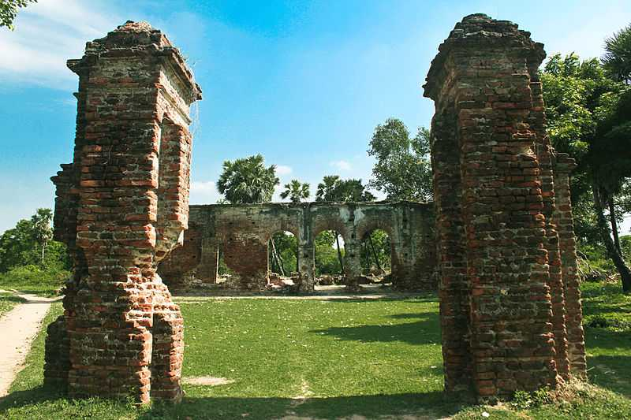

Located around 15 km from the city of Pondicherry, Auroville is located in Tamil Nadu and was founded in 1968 by Mirra Alfassa, a disciple of Aurobindo and fondly known as the 'Mother' of Sri Aurobindo Society.
Promenade Beach, also known as Rock Beach, is one of the most popular and iconic beaches in Pondicherry, India. Situated along the eastern coast of the city, this picturesque stretch of coastline is renowned for its vibrant atmosphere, scenic beauty, and cultural significance.

ituated within a half hour drive of the French colonial town of Pondicherry, Arikamedu is an ancient Roman trade centre hidden from the eyes and ears of the commonplace Tamil tourism. Its name has been taken from the Tamil word- 'Arikanmedu' which means 'eroding mount'.
The Lighthouse is one of the remarkable landmarks in Pondicherry. The French Riviera of the East, Pondy has two lighthouses, an old one and the new one.
The French War Memorial, located in Pondicherry, India, is a solemn tribute to the soldiers who sacrificed their lives during World War I.
A beautiful temple town in the Cuddalore District of Tamil Nadu, Chidamabaram is famous for housing the marvellous Lord Nataraja Temple and the famed chariot festival. Situated 250 kms away from the city of Chennai, Chidambaram has been a place of architectural glory and religious importance since antiquity.
Situated 11 km from the Pondicherry in small town of Villianur, Gokilambal Thirukameswarar Temple is a beautiful temple dedicated to Lord Shiva. However, one can clearly witness the French influence over the temple through their varied traditions.

Standing sturdy at the centre of the Bharathi Park in Pondicherry, Aayi Mandapam or Park Monument is a pearly white edifice built during the reign of Napolean III, Emperor of France.

Located on the Pudhukuppam Beach in Pondicherry, 12 kms north of Auroville, Sri Karneshwar Nataraja Temple is the most unusual and yet one of the most beautiful temples present in India. Constructed in a pyramid shape, the temple is built to resemble the great pyramids of Egypt.

Witnessing the mesmerizing sunrise in Pondicherry is truly an unforgettable experience that should not be missed.
The Mahatma Gandhi Statue in Pondicherry, a towering four-meter-high monument surrounded by eight majestic granite pillars sourced from the Gingee fort, located approximately 70 kilometers away, stands as a symbol of reverence and tribute to the Father of the Nation, Mahatma Gandhi.

The Immaculate Conception Cathedral, situated in Pondicherry, India, stands as a magnificent testament to the city's rich cultural heritage and architectural grandeur. Also known as the Cathedral of the Immaculate Conception, this historic church holds a revered place in the hearts of locals and visitors alike.